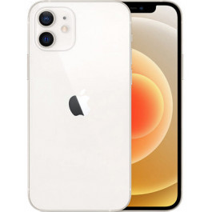
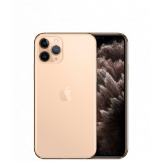
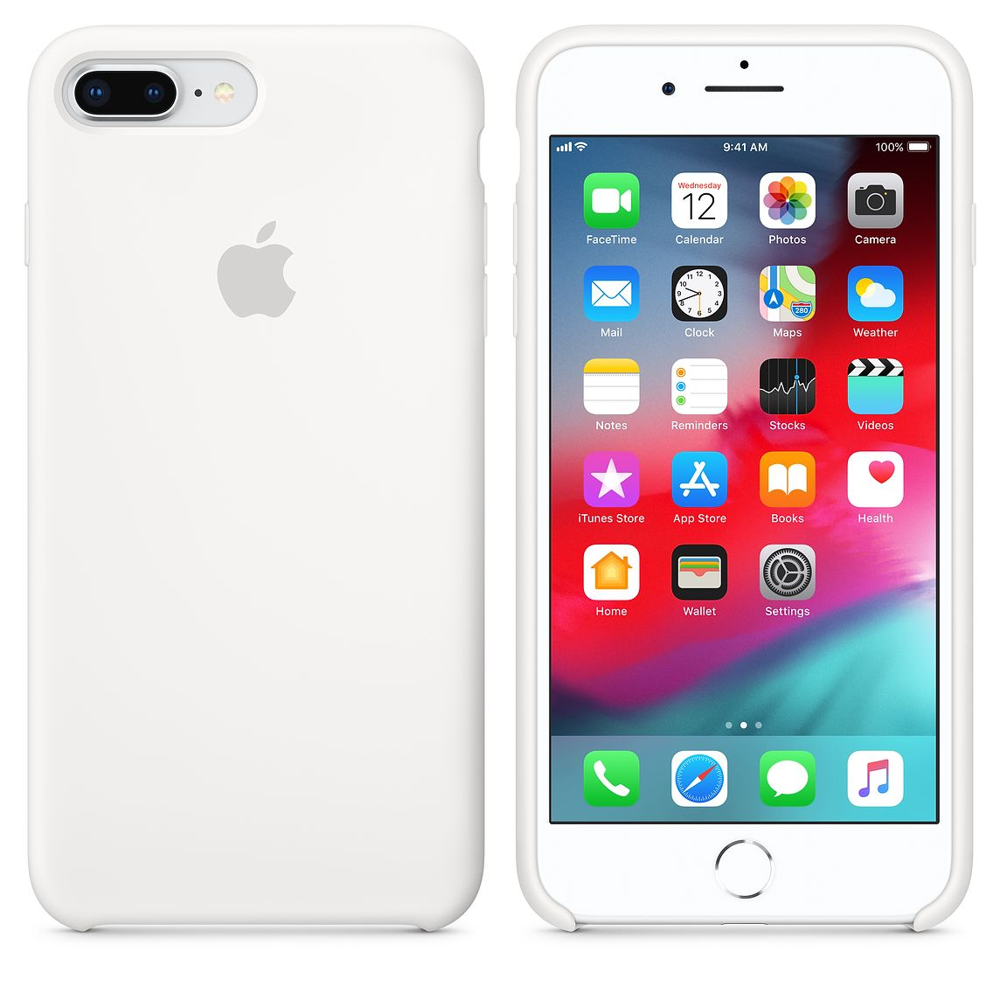

It is the first major redesign since the iPhone X, similar to that of iPad Pros
since 2018 and the 4th-generation iPad Air. The iPhone 12 and 12 Mini have a new design
featuring a flat chassis, a design seen with the iPhone 4 until the iPhone 5S and the original
iPhone SE. The notch size is similar to previous iPhone models, despite speculation about a
reduction in width.[16] The borders around the display are thinner by 35% than any previous
model. The new design also comes with a ceramic-hardened front glass, marketed as Ceramic
Shield, while the back retains the previous generation Dual-Ion Exchange strengthened glass.


The iPhone 11 is available in six colors: Purple, Yellow, Green, Black, White, and
Product (Red). There is a notch at the front for the TrueDepth camera system and speaker,
similar to its predecessor, the iPhone XR. There is a bump in the back for the cameras and the
flash that is the same size as the iPhone 11 Pro, although the iPhone 11 only has two cameras
compared to the Pro's three cameras.[7][4] Also, the iPhone 11 has a matte glass rear camera
housing and glossy glass back, while the iPhone 11 Pro has a glossy glass rear camera housing
and matte glass back. The Apple logo is now centered on the back of the device with no text, a
change from previous models.
All colors of iPhone 11 except yellow
Color Name
Black
White
Purple
Yellow
Green
Product (Red)
The iPhone 7's overall design is similar to iPhone 6S and iPhone 6. Changes
introduced included new color options (matte black and jet black), water and dust resistance, a
new capacitive, static home button, revised antenna bands, and the removal of the 3.5 mm
headphone jack. The device's internal hardware received upgrades, including a heterogeneous
quad-core system-on-chip with improved system and graphics performance, upgraded 12 megapixel
rear-facing cameras with optical image stabilization on all models, and an additional telephoto
lens exclusive to the iPhone 7 Plus to provide enhanced (2x) optical zoom capabilities and
portrait mode.
